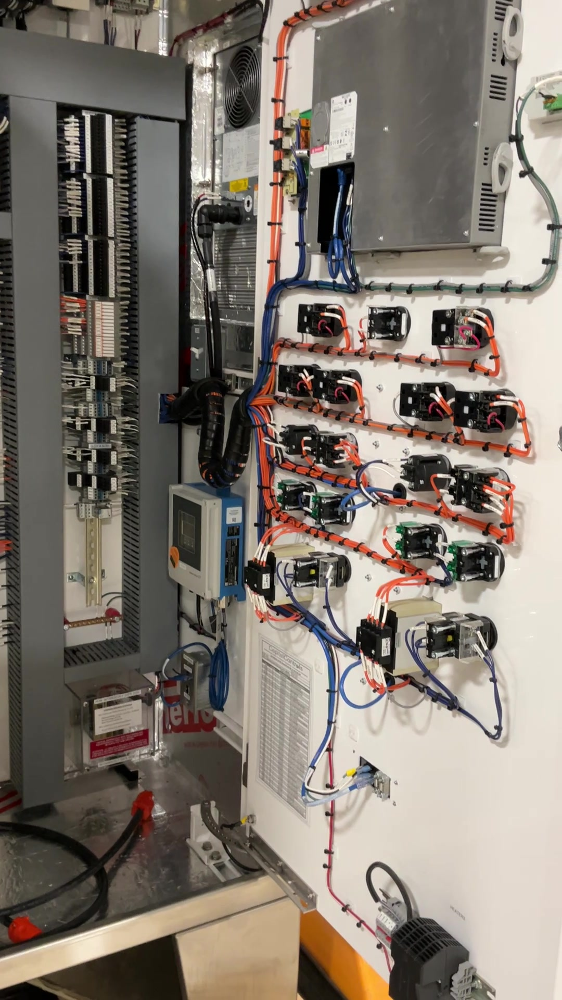

System Overview
A typical pumping station delivered under our scope includes measurement at the wet well, deterministic pump control, annunciation for fault and high-level conditions, and a communication path suited to your telemetry or SCADA architecture.
Wet Well Level
Ultrasonic, hydrostatic pressure, or both for check or backup; scaling, filtering, and fail-to-safe behavior are defined in the PLC from the outset.
Pump Control
Lead/lag or alternate sequencing with start and stop bands, minimum runtime, and interlocks derived from level, pressure, or flow where instrumented.
Alarm State
High wet well, pump fail, and seal or thermal faults are annunciated locally and passed upstream to SCADA or telemetry as required.
Common Inputs and Outputs
Inputs
- Level measurement from ultrasonic or pressure transmitters, with discrete high-level backup where specified.
- Pump auxiliaries including run status, overload, seal fail, thermal trip, and permissives from starters or VFDs.
- Field instrumentation such as discharge pressure, flow, sump level, door contacts, or generator status where the station warrants it.
Outputs
- Pump commands for start/stop or speed reference through motor starters, soft starters, or VFD packages.
- Alarm and status transmission to HMI, RTU, cellular telemetry, or central SCADA with point naming aligned to the owner standard.
- Operator indication through local panel lights, horn, HMI banners, and remote alarm summaries.
What We Deliver
The delivery model stays practical: one accountable control scope tied to the station design, the owner standard, and field startup requirements.
Panel design & fabrication
CSA-rated control panels with documented FAT, nameplate discipline, and drawing packages aligned to the project electrical scope.
PLC programming
CompactLogix, MicroLogix, Micro800, or ControlLogix programming structured so maintenance staff can follow the sequencing years later.
HMI development
FactoryTalk View local or supervisory graphics for pumps, levels, alarms, trends, and operating modes.
Instrumentation integration
Level, pressure, flow, and pump auxiliaries wired and commissioned with the right I/O handling, shielding, and grounding practice.
Field commissioning
Loop checks, pump rotation verification, wet well simulation or staged startup, and telemetry or SCADA checkout with operations.
Documentation
I/O lists, schematics, panel BOMs, redlines, and PLC or HMI exports prepared for owner turnover and future support.
Typical Deliverables
Design package
Control narratives, I/O assignments, panel layouts, power distribution, and terminal schedules tied back to the station equipment list.
Turnover package
Native PLC and HMI files, searchable PDFs, FAT markups, commissioning notes, and field redlines where required by the owner.
Control Strategies
Station logic is site-specific, but recurring patterns reflect how operators actually run lift and storm stations: minimize cycling, equalize wear, and fail predictably.
Lead / Lag / Alternate
Start order and level bands are defined so both pumps share duty, with alternation based on hours, starts, or cycle-by-cycle changeover as specified.
Runtime Equalization
Accumulated runtime can be balanced between pumps to distribute wear across motors, seals, and rotating assemblies.
High-Level Override
If wet well level exceeds threshold, lag starts regardless of alternation logic and the station drives the appropriate overflow or storm alarm upstream.
Failover Conditions
On overload, seal fault, or no-flow where instrumented, the faulted pump is removed from duty, alarmed, and the standby is brought on if demand remains.
Manual / Auto Modes
Local permissive for O&M, remote start/stop from SCADA only when interlocks allow, and hand positions coordinated with the motor control design.
Emergency Operation
Defined behavior under instrument loss, single-pump outage, comms loss, or backup power conditions so the station degrades in a controlled way.
Operator Priorities
What operations staff need
- Clear duty state so they can see which pump is lead, available, faulted, or manually held out.
- Alarm clarity with direct indication of high wet well, failed starts, motor trips, and comms health.
- Stable control that avoids nuisance cycling and unplanned equalization drift.
What maintenance staff need
- Traceable logic with readable tags, structured alarms, and predictable fallback behavior.
- Accessible hand modes for checkout without defeating essential protections.
- Turnover records that match the installed panel, field terminations, and final PLC revision.
Control Philosophy
A typical station is not just "pump on high level, pump off on low." The PLC usually applies a defined sequence so operators can see which pump is duty, when assist comes in, how runtimes are equalized, and what the station will do if the primary level signal or a pump becomes unavailable.
Practical Design Notes
Level bands must be deliberate
Start and stop points are set to give useful storage, avoid short cycling, and match the hydraulic behavior of the force main and wet well rather than relying on generic factory defaults.
Unavailable pumps are skipped cleanly
If a pump is faulted, locked out, or left in hand, the sequence should move to the next available unit instead of repeatedly calling an unavailable machine and masking the real condition.
Alarms and Failover
Operators need to know not only that an alarm occurred, but what the station did on its own and whether the site is still controlling safely. Practical failover logic turns a bad instrument, starter fault, or comms outage into a manageable operating condition instead of an ambiguous callout.
Why This Matters in the Field
Alarm text should explain the operating consequence
- Which pump was called
- Whether standby started successfully
- Whether the station is still in automatic control or running in fallback
Failover should preserve service, not hide the fault
- The station should keep pumping when a backup path exists
- The failed device should remain clearly identified and unavailable until reset
- SCADA should show both the active alarm and the degraded operating mode
Hardware / Platforms
Platform selection follows station size, owner standard, and network architecture, but most municipal programs stay within a predictable Rockwell-centered stack.
Control platform
- Allen-Bradley CompactLogix / ControlLogix for scalable Ethernet/IP I/O and multi-pump station integration.
- Micro800 series for compact installations where I/O count and communications suit a smaller controller footprint.
- Remote I/O / telemetry through distributed Ethernet/IP, cellular, or fiber paths to suit owner IT and SCADA standards.
Operator and drive layer
- FactoryTalk View for local or supervisory interfaces showing levels, pump states, alarms, and trends.
- VFD integration where speed control, soft fill, or hydraulic operating limits call for more than across-the-line starts.
- Starter and auxiliary integration coordinated with overloads, HOA selectors, seal fail points, and motor thermal status.
Panel and System Walkthrough
This proof block uses actual project footage and job photography rather than marketing renders. It shows the delivered enclosure, interior assembly, door-mounted operator interface, and an installed control cabinet so owners can evaluate serviceability, operating visibility, and real-world deployment from the hardware itself.

Desktop loads this walkthrough muted and looped for quick proof review. Mobile starts paused so operators and engineers can choose when to play the clip.
What the walkthrough shows
A real stainless pump station control package with the door open, showing the operator face, labeled devices, terminal field, power section, and the physical hardware layout maintenance staff actually inherit.
Why it matters
Operators get local status, alarm acknowledgment points, and direct interface access. Maintenance gets clear component separation, identifiable replacement hardware, and realistic service clearances instead of a generic spec-sheet promise.
What this proves
This is built equipment, not concept art: real enclosure fabrication, real controls hardware, real operator devices, and real deployment context that shows how the system will be serviced after startup.
Proof Images

Finished stainless enclosure with multi-door access and field-ready construction. This matters because enclosure form, cooling arrangement, and service access affect long-term reliability before the cabinet ever reaches site.

Open-panel view showing the actual power, control, and operator sections together. This matters because maintainability depends on real hardware spacing, wiring discipline, and a layout technicians can troubleshoot under callout conditions.

Drive and protection hardware mounted in the power section. This matters because replacement points, isolation devices, and packaging quality determine whether faults can be diagnosed and returned to service quickly.

Door-mounted HMI, indicators, selectors, and reset devices used for local operation. This matters because startup, alarm response, and manual fallback all depend on clear local visibility when SCADA is not enough on its own.

Real control hardware opened in service rather than staged as a marketing render. This matters because owners need proof that the delivered control approach survives actual operating environments, wiring density, and field access constraints.
Typical Applications
Municipal Wastewater
Duty or standby pump stations tied into treatment plant SCADA, area telemetry, or district-wide alarm reporting.
Stormwater Stations
Level-driven pumping with high-level escalation, event visibility, and operating modes suited to wet-weather conditions.
Lift Stations
Sanitary lift applications where lead/lag control, remote alarming, and maintainable local operator interfaces matter.
Retrofit Upgrades
PLC, HMI, panel, telemetry, and instrumentation replacements for stations that need a cleaner control layer without civil rebuild.
Discuss Your Project
Contact engineering with the station type, pump count, telemetry or SCADA standard, and whether the work is a retrofit or new build. That gives us the right starting point for platform alignment, panel scope, and commissioning planning.